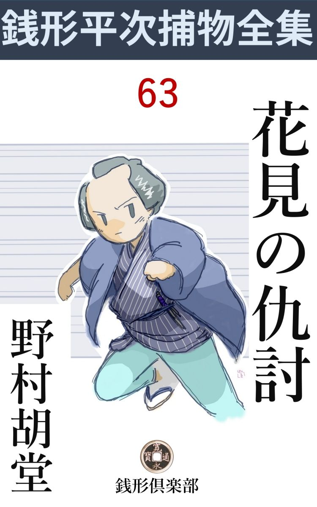
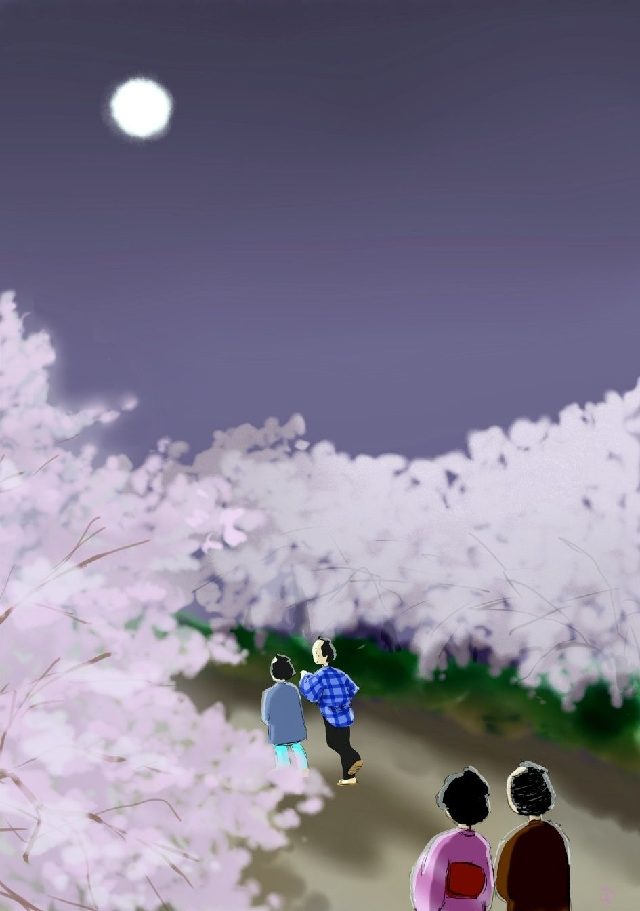

| 花見の仇討: 銭形平次捕物全集第63話 (銭形倶楽部) | |
| 野村胡堂 | |
| ZENIGATA CLUB (2018) | |

一
「親分」
ガラッ八の八五郎は息せき切っておりました。続く------大変------という言葉も、容易には唇に上りません。
「何だ、八」
飛鳥 山の花見帰り、谷中へ抜けようとする道で、銭形平次は後から呼止められたのです。飛鳥山の花見の行楽に、埃と酒にすっかり酔って、これから夕陽を浴びて家路を急ごうというとき、跡片付けで少し後れたガラッ八が、毛 氈 を肩に引っ担いだまま、泳ぐように飛んで来たのでした。
「親分、------引っ返して下さい。山で敵討がありましたよ」
「何？」
「巡礼姿の若い男が、虚無僧に斬られて、山は煮 えくり返るような騒ぎで」
「よし、行って見よう」
平次は少しばかりの荷物を町内の人達に頂けると、獲物を見付けた猟犬のように、飛鳥山へ取って返します。
柔かな夕風につれて、どこからともなく飛んでくる桜の花片、北の空は紫にたそがれて、妙に感傷をそそる夕です。
二人が山へ引っ返した時は、全く文字通りの大混乱でした。異常な沈黙の裡に、掛り合いを恐れて逃げ散るもの、好奇心に引ずられて現場を覗くもの、右往左往する人波が、不気味な動きを、際限もなく続けているのです。
「退いた退いた」
ガラッ八の声につれて、人波はサッと割れました。その中には早くも駆け付けた見廻り同心が、配下の手先に指図をして、斬られた巡礼の死骸を調べております。
「お、平次じゃないか。ちょうど宜い、手伝ってくれ」
「樫谷 様、------敵討だそうじゃございませんか」
平次は同心樫谷三七郎の側に差寄って、踏み荒した桜の根方に、紅 に染んで崩折れた巡礼姿を見やりました。
「それが不思議なんだ、------敵討と言ったところで、花見茶番の敵討だ。竹光を抜き合せたところへ、筋書通り留め女が入って、用意の酒肴 を開こうと言う手順だったというが、敵の虚無僧になった男が、巡礼の方を真刀で斬り殺してしまったのだよ」
「ヘエ------」
平次は同心の説明を聴きながらも、巡礼の死体をていねいに調べて見ました。笠ははね飛ばされて、月 代 の青い地頭が出ておりますが、白粉を塗って、引眉毛、眼張りまで入れ、手甲、脚絆から、笈 摺 まで、芝居の巡礼をそのまま、この上もない念入りの扮 装 です。
右手に持ったのは、銀紙貼りの竹光、それは斜 っかいに切られて、肩先に薄 傷 を負わされた上、左の胸のあたりを、したたかに刺され、蘇 芳 を浴びたようになって、こと切れているのでした。
「身元は？ 旦那」
平次は樫谷三七郎を見上げました。
「すぐ解ったよ、馬場の糸屋、出雲屋の若主人宗次郎だ」
「ヘエ------」
「茶番の仲間が、宗次郎が斬られるとすぐ駆け付けた。これがそうだ」
樫谷三七郎が顎で指すと、少し離れて、虚無僧が一人、留め女が一人、薄寒そうに立っているのでした。
そのうちの虚無僧は、巡礼姿の宗次郎を斬った疑いを被ったのでしょう。特に一人の手先が引き添って、スワと言わば、縄も打ち兼ねまじき気色を見せております。
次第に銀鼠色に暮れ行く空、散りかけた桜は妙に白茶けて、興も春色も褪 めると見たのもしばし、間もなく山中に灯が入って、大きな月が靄 の中に芝居のこしらえ物のように昇りました。
陰惨な、そのくせ妙に陽気な、言いようもない不思議な花の山です。
「旦那、少し訊いて見たいと思いますが------」
平次は樫谷三七郎を顧みました。
「何なりと訊くが宜い」
「では」
平次は茶番の仲間を一とわたり眺めやります。
二
「お前は？」
一番先に眼を着けたのは、天蓋 だけ払って青白くたたずんだ背の高い虚無僧でした。
「ヘエ、同じ町内の兼吉と申します、油屋渡世で」
「知ってるだけを話して見るが良い」
平次の調子は冷たくて峻烈です。
「お花見も毎年のことだから、今年は趣向を変えて、敵討の茶番を出そうと言い出したのは、出雲屋さんでした」
「------」
「出雲屋さんは二枚目型だから、敵を討つ方の巡礼、私はこんな柄ですから、討たれる方の虚無僧で」
「------」
平次は黙って先を促します。砥 の粉 を塗って、隈 を入れた顔、尺八を持って一刀を手 挾 んだ面魂は、五尺五六寸もあろうと思う恰幅の、共に如何さま敵役に打って付けの油屋兼吉です。
「ここで落ち合うのは申刻 半 （五時）出雲屋さんが敵名乗 を揚げて、二人が竹光を斬結んだところへ、良助さんが留め女に入って、三味線を弾くと、巡礼の出雲屋さんと、六部になった倉松さんの笈摺から、酒肴が出るという寸法で」
「その竹光を見せて貰おうか」
「ヘエ------」
虚無僧の兼吉が、鞘 ごと出した一刀、平次は引っこ抜いて見ると、是は紛れもない銀紙貼りの竹光、人など斬れる代物ではありません。
「それからどうした」
「出雲屋さんは一足先へ出ましたが、あとの三人はお店 の人たちと一緒に、バラバラに出掛けるうち------私は家から使いの者が来て、途中から瓦町 まで引返し、四半刻ばかり手間取って来ると、この始末でございました、ヘエ------」
「家の方にどんな用事があったんだ」
「それが不思議で、------瓦町の家へ引返すと、女房は使いなどをやった覚えは無いと言います」
「フ------ム」
「私を手間取らせておいて、私に化けた奴が山へ駆け付け、出雲屋さんを斬ったのでございましょう」
「誰かそれを見た者は無かったでしょうか」
平次は樫谷三七郎を顧みました。
「五人や十人は見ていた筈だ。が、花時の飛島山にはそんな茶番は毎日二つ三つある。血 糊 の使い方と、巡礼の落入り方がうまいなとは思ったそうだが、これが本当の人殺しとは誰も気が付かなかったらしい。------そのうちに虚無僧は逃げてしまったし、掛り合いが怖いと思ったか、一人も進んでその時の様子を話してくれる者は無い。------これはみんな、茶店の老爺 の口から出たことだ」
樫谷三七郎は舌鼓でも打ちたい様子でした。極度に掛り合いを怖れたその当時の群衆は、よしや、眼の前で人殺しがあったところで、黙って見て、黙って引揚げてしまったことでしょう。
「爺 さん、お前さんは最初から見ていたんだね」
「ヘエ------、最初と申しましても、敵名乗が始まってからでございます」
茶店の老爺は逃げも隠れもならず、仕様事なしの証人になりました。
「どんな事を言ったか知ってるだろう」
「何でも、芝居のせりふ のような事を申しましたよ。------親の敵権太佐衛門、ここで逢ったは百年目------とか何とか」
「それは斬られた方の巡礼の方だな」
「ヘエ------、すると、虚無僧は黙って引っこ抜いて斬り付けました」
「黙って？」
「何にも言わなかったようでございます。巡礼は少し見当が違った様子で竹光で受けましたが、虚無僧のは真 刀 だったと見えて、竹光は一ぺんに切れて、巡礼の肩先へ斬りつけました」
「フム」
「巡礼は驚いた様子で、------手前は何だ、------人違いなら、人違いと言ってくれ------と逃げ腰になりましたが、虚無僧は追っかけて力任せに突いたと見ると、巡礼はあの通り胸をやられて、材木のように仆 れました」
「------」
「お茶番の積りで見物に寄って来た人達も、このとき少し変だわいと思った様子でしたが、気の付いた時はもう、虚無僧は逃げてしまって、間もなく、六部の方 が来てびっくりした様子で介抱しているところへ、女形 の方や、いろいろの方が駆けつけ、それからお役人様方が見えました。ヘエ」
茶店の老爺の話は思いの外井然 としております。
「その虚無僧は、この人とは違うのか」
平次は油屋の兼吉を指したのです。
「ヘエ------」
老爺は返事に迷った様子でした。
「背の高さは？」
「かなり高い方でございました」
「天蓋や、着付や、尺八は？」
「大概決りがございますから、よく似ております」
老爺の穏かな調子のうちにも、兼吉は逃げ路を塞がれた心持でしょう。隈取った顔が真っ蒼に変るのを平次は見落しませんでした。
そこへ、ノッソリと現われたのは、四十年配の浪人者です。
「宗次郎殿が殺されたそうじゃないか、一体どうした事だ」
「ああ蔀 の旦那、大、大変なことになりました」
虚無僧姿の兼吉は泣き出しそうです。
「貴殿は？」
同心樫谷三七郎は、横合からズイと出ました。二人にあまり物を言わせたくなかったのでしょう。
「蔀半四郎と申す。出雲屋の食客じゃ------」
半四郎は場所柄を考えたか、こう言いかけて、苦笑いの唇をつぐみました。
「出雲屋の主人が斬られたと、どこで聴かれた」
樫谷三七郎は追究します。
「遅れて夜桜見物に参ると、山中の大評判じゃ。巡礼姿の男が、虚無僧に斬られたと聞いたが------これ、油屋、その方が宗次郎を斬ったのか」
屹 と兼吉を見据えます。磊落 そうな調子ですが、なかなか油断の無い面構えです。
「飛んでも無い、旦那」
兼吉はもういちど顫え上がりました。
「肩はかすり傷だ、刀を胸へ突っ立てるなどは、町人の仕業だな」
蔀半四郎は死骸を無遠慮に調べながら、こんな事を言います。
三
続いて六部になった倉松を調べました。が、これは背恰好が兼吉と似ているというだけで何の得るところもありません。順当に馬道を出て、多勢といっしょに順当に飛島山へ来たことは、時刻から見てもまず疑いは無いようです。
「お、こいつは真刀が仕込んである」
手先の一人は、倉松の持っていた錫杖 が、真刀を仕込んだ物騒なものだったことを発見しました。
「有り合わせの品でございます、ヘエ」
倉松はギョッとした様子でしたが、思い直して苦笑いをしております。錫杖に仕込んだ真刀は、物々しい品には相違ありませんが、肝心の血がついていなかったのです。
「お前は？」
平次は錫杖などに構わず、その次に小さくなっている女形 に問いかけました。
「ヘエ------、良助と申します」
ヒョイとお辞儀をしました。花見鬘 を取った野郎頭、厚化粧に振袖をだらしなく着て、三味線を抱いた姿は奇怪です。
「稼業は？」
「ヘエ------、つまらない商売で、ヘエ」
良助は首筋を掻きました。小作りのキリリとした身体や、整った眼鼻立は、なるほど女形に向きそうですが、稼業のことはあまり言いたくない様子です。
「遊び人ですよ、親分」
ガラッ八はささやきました。なるほどそう言えば、堅気の人間らしくはありません。
「手前は黙っていろ、------本人に言わせたいんだ」
「ヘエ------」
平次に極めつけられて、ガラッ八は一と縮 みに縮んでしまいました。
「大層山へ来るのが遅れたそうじゃないか、家から使の者でも来たのか」
と平次。
「それが不思議なんで、親分、油屋さんと同じような具合に、田圃から三河島へ抜けようとすると、後から追っかけて来た見知らぬ小僧が、家に用事があるから、ちょいと戻ってくれと、こう言うじゃありませんか。------おやと思うと、もう小僧の姿も見えません。ともかく馬道の長屋まで戻ると、家はあっしが出た時のままで、何の変りもありません。まるで狐につままれたような心持で、引返して山へ来ると、この騒ぎです」
良助の話には仕方 が入ります。
「馬道の家には誰がいるんだい」
「独り者で、生憎誰もおりません」
「お前が帰ったのを見た者はないわけだな」
「ヘエ------」
良助は落胆した様子です。
「その扮装 で歩くと町内の者が気がつく筈だが------」
「このお振袖じゃ、馬道は歩けません。扮装 は風呂敷包にして、王子の佐野屋で着換えました」
「フーム」
「佐野屋でお訊き下されば解りますよ、親分」
「まア、宜い。皆な佐野屋で着換えたのか」
「いえ、王子で着換えたのは女形のあっしだけで、あとは六部や虚無僧や巡礼だから気が強いわけで、あの扮 装 で浅草から繰出しましたよ、ヘエ」
良助の話はよく筋が通ります。
あとは出雲屋の手代佐吉、町内の者二三人、これはいずれも不断着のままで、何んの変哲もなく、馬道を出たのも一緒ですから、疑う余地は少しもありません。
ちょうどその時、山の八方へ手分けをして、噂と証拠を掻き集めました、五六人の手先が引揚げて来ました。
「樫谷様、------虚無僧が逃げた様子はございません」
「何？」
報告は皆なこの調子です。
「敵討騒ぎの後前から、山を降りた虚無僧は一人もありません。山番や見廻りの者が言うことですから、これは間違いの無い積りで------」
「待て待て。すると、出雲屋宗次郎を殺した下手人は、まだ、この山の中にいるというのだな」
樫谷三七郎は予想外の様子です。
「花見客は驚いて大概帰りました。山の四方はすっかり見張ってありますから、怪しい者は、出ようも入りようもありません」
「フーム」
唸った樫谷三七郎の眼は、自然油屋兼吉の虚無僧姿に戻ります。兼吉が、もういちど顫え上ったのは言う迄もありません。
「平次、どうだ」
三七郎は平次を顧みました。
「あっし にも解りません、旦那」
「それじゃともかく兼吉を番所まで伴れて行くとしよう。その他の者も掛り合いだ、遠出はならぬぞ」
「ヘエ------」
泣き出しそうな兼吉を追い立てて、樫谷三七郎は引揚げました。
残ったのは、平次とガラッ八と、山を見廻っていた土地の役人だけ。
「親分、もう一度山中搜して見ましょうか」
ガラッ八は、沈み返った親分の顔を覗くのです。
「虚無僧の隠れるような穴なんか無い筈だよ」
「ヘエ------」
「それより手前 は、馬道へ行って、出雲屋の店中の者の出入りと、良助、倉松、兼吉三人の身元を洗ってくれ、------おっと、浪人の蔀 半四郎、あれも忘れちゃならねえ」
「ヘエ------」
「宗次郎に怨 のある奴はないか、宗次郎が死んで儲かる奴はないか------今日昼過ぎどこへ行ったか、行方の判らなかった奴はないか、それを訊出すんだ」
「心得た」
ガラッ八は気軽に飛んで行きます。
四
「親分」
後から静かに声を掛ける者があります。静かながら、妙に艶めかしい声、------半次はぼんのくぼを羽根で撫でられるような心持で振り返りました。
桜に松の交った道灌 山道 、月はかなり高く昇って、夢見るような朧 の中には、誰もいません。
「誰だ」
平次は思わず足を停めます。
「親分、私を忘れちゃ、懐中 の十手の手前義理が悪いでしょう。ホ、ホ」
取って付けたような笑いですが、それが例の羽根で撫でるような媚 を、夜の空気に漂よわせるのでした。
「お滝か」
平次は素気ない調子で言いました。王子のお滝という、名題の女巾着切、二十四五の豊満な肉体と、爛熟し切った媚態とで、重なる悪事をカムフラージュして行く、その道では知らぬ者の無い大姐御です。
「お滝か------はないでしょう。銭形の親分さんともあろうものが、思案投首で、私のいるのも知らずに通り過ぎたりして」
「用事が無きゃ放って置いてくれ、俺は忙しい」
平次はクルリと背を向けて、そのまま行手を急ごうとすると、
「まア、待って下さいな、親分」
ヒラリと身を翻 えしたお滝、平次の袖の下を潜るように先へ立塞がって大手を拡げます。粋な潰し島田、縮 緬 の花見衣裳、少し斜に構えて両手を開いたポーズは、銭形平次の眼にも型になっておりました。
「用事があるなら言えッ」
以ての外の平次。
「出雲屋の若主人殺しの下手人は、見当だけでも付きましたか、親分」
「何？」
「それを教えて上げようと思って、ここで待っていたのですよ、親分」
「誰だ？」
「ホ、ホ、まるでお白洲 じゃありませんか、そんな怖い顔なんかしてさ。------ちっと恩に着なきゃ駄目」
「------」
「ね、親分さん、私は十年も前から、親分に岡惚れてるじゃありませんか、憎らしいねえ、本当に」
「十年前------お前が、小さい妹と二人で、両国で赤い股 引 を穿いて、玉乗りをしていた頃か」
「あら、よく知ってるのねえ、嫌になるじゃありませんか」
お滝は袂を翻 して、平次を打つような素振りを見せました。
そう言ったお滝だったのです。
「だから余計な事を端折って、肝心の事だけ言うが宜い」
「叶 わないよ、親分には。------ね、親分さん、樫谷の旦那は、油屋の兼吉さんを縛る積りのようだけれど、あの人は、刃物を隠す隙も無かったし、返り血も浴びてないじゃありませんか」
「それがどうした」
「私は出雲屋さんを斬ったのは、真物の敵持の虚無僧じゃないかと思うが、どうでしょう」
「フーム」
お滝は不思議なことを言い出しました。
「油屋兼吉さんが手違いで遅れたと知らずに、巡礼になった出雲屋さんが、真物の虚無僧------それも敵持ちでビクビクしているのか何かへ、いきなり敵名乗を揚げて、竹光でも何でも、ピカピカするので斬り付けたとしたら、どうなるでしょう？」
「------」
「真物の虚無僧はお茶番とは知らないから、すっかり真に受けて、本当に返り討にする気で殺さないとは限らないでしょう------」
お滝の言うことは、如何にも理に詰みます。
「ありそうな筋だな」
平次は静かに応えました。
「真物の虚無僧で敵持だったら、今頃は大宮あたりまで逃げ延びていますよ。飛島山で腕組をしながらお日様を見たって、親分さん」
お滝の舌は次第に辛辣 になります。
「だがな、お滝、------敵討騒ぎがあってから、一人も山から逃げ出した虚無僧はないんだぜ」
「天蓋を取って、袈裟 を外して、笛を隠したら、虚無僧はどんな恰好になるでしょう」
「------」
「そんな浪人者は、飛鳥山に二三十人いましたよ、親分」
平次はしかし頭をふりました。虚無僧が人を返り討ちにしたところで、姿を変えて逃出す必要があろうとは思われません。
「騒ぎのすぐ後から、楽に逃げられた筈だ。姿まで変える筈はない。------姿を変えて逃げたものなら、やはり出雲屋に掛り合いの者か、茶番の仲間だ」
平次の言うのは道理です。変装する以上は、顔を知られたくない者の仕業に相違ありません。
「親分」
「もう宜い。------お前は誰かを助けたいんだろう、余計な事をすると藪蛇になるぜ」
「------」
女は黙って頭を垂れました。
五
平次は足音高く谷中の方へ行くと見せて、そっと引返しました。朧 の中を帰って行くお滝の姿が、何としても唯事ではなかったのです。
道は松の闇を過ぎて桜の朧に入りました。たゆたい勝ちなお滝の足取りから、平次は何やら読み取るような心持で、再び飛島山の方へ向いましたが、お滝は山に登る様子もなく、無関心に山裾を廻って、王子の町へ出ると、そのまま、後も振り向かずに、花見茶屋の佐野屋の暖簾 を潜ります。
しばらく間をおいて、佐野屋へ入った平次。
「今ここへお滝が入ったようだが------」
うさんな顔を店中に配りました。
「これは、銭形の親分さんで。ヘエヘエ、ツイ今しがた、お滝姐さんが来ましたよ。何でも、色気違いに後をつけられて、うるさくって仕様がないから、裏口からそっと逃がしてくれ------という頼みで------」
番頭は揉手をしながら、およそ尤もらしい調子でこんな事を言うのでした。
「ハッハッハッ、ハッ、ハッ、------この平次が色気違いに見えるかえ、番頭さん」
「飛んでもない親分さん」
「まア、宜い、若い女の後を跟 けて来たに違いないから、何と言われても一言もないよ、ところで、番頭さん」
「ヘエヘエ」
「今日、山の上であの騒ぎのある少し前に、馬道の良助が、ここで着物を変えたそうだ。それは何刻 だったろう」
平次は調子を戻して、大事な事を訊ねました。
「酉刻 （六時）少し前でございましたよ。なア、お作」
「良助親分が女の着物を着て山へ行くと、間もなく酉刻 が鳴りましたよ」
下女のお作というのが階子段へ片足かけたなりで応えます。
「敵討騒ぎのある前か後か」
「いえ、騒ぎがここへ聞えたのは、それから少し経ってからですが、馬道の良助親分が、女形 になって行ったのは、多分敵討騒ぎの最中だったでしょう」
「山へ行く時、ここへどんな物を頂けて行ったえ」
「馬道の親分が、着ていたものだけでございました」
「フーム」
良助に対する疑いも次第に薄れて行きます。いや、佐野屋の番頭に訊くまでもなく、山の茶店の老爺の言うのが本当なら、宗次郎を殺した虚無僧は大男で、良助のような小男は、最初から疑いの圈外におかるべき筈です。
お滝に弄 ばれたような気持で、平次はムシャクシャしながら神田へ帰って来ました。
「親分、いろいろの事が解りましたぜ」
それを待ち構えていたのはガラッ八の八五郎です。
「何が解ったんだ、順序を立てて言って見るが宜い」
と平次。
「順序も何もありゃしません。お茶番へ出た連中で、宗次郎に怨の無いのは一人もない位のもので」
「フーム」
「虚無僧になった油屋の兼吉は、出雲屋から金を借りて、眼玉の飛出すような高い利息を七年越し払わされてますぜ」
「それから」
「六部になった倉松は、町内の顔役で、日頃宗次郎とは、角突き合いばかりしていますよ。宗次郎が死んで一番伸々するのは倉松で」
「フーム」
「遊び人の良助は女の怨だ。------出雲屋の新造というのは元吉 原 の芸者で、良助と深い仲だったというから、これも命の二つや三つは取りたかったでしょう。それから------」
「まだあるのか」
「番頭の喜八、これは馬道の店で留守をしていたそうですが、近所で訊いて見ると、遣い込みだらけですよ------それから女房のお夏は芸妓上りのくせに恐ろしい嫉 妬 で、亭主の首を締め兼ねない女だという評判ですぜ」
「首を締めたんじゃない、虚無僧になって飛鳥山で返り討ちにしたんだ。留守番の番頭と女房のお夏は下 手 人 じゃない」
「すると、下手人は誰でしょう、親分」
「良助は山へ行った時刻が騒ぎの後だし、虚無僧の扮装 を隠しようはない、その上身体が小さい。倉松は皆なといっしょに馬道から来ている。兼吉はいちばん怪しいが、敵名乗を揚げられて一言も言わなかったり、宗次郎を殺してどこかへ行って、またもとの姿で来るとは思われない。それに、こんな時は、一番怪しい奴はたいてい罪の無いものだ」
「------」
「もう一つ、兼吉だったら、血刀の始末をどうしたか、それも解らない。素人があれだけの事をしたんだから、返り血ぐらい浴びた筈だが、兼吉の身体にはそんな跡は一つもない」
「すると、怪しいのは、一人も無いじゃありませんか、親分」
「怪しくないのを取りのけた、残りの怪しい奴だ------」
「蔀 半四郎」
「その通りだ、今のところ蔀半四郎が一番怪しい。が、浪人でも二本差しだ、うっかり縛るわけにも行くまい」
六
「親分、番頭の喜八は、頭痛がすると言って、昨日は昼から寝込んでいたそうですよ］
馬道の出雲屋へ行ったガラッ八、二度目には変な事を聞き込んで来ました。
「遣い込みのあるという番頭だな」
「ヘエ、その野郎で」
「行ってみようか、八」
二人はすぐ飛んで行きました。ゆうべ樫谷三七郎に引かれて行った、油屋の兼吉は、申訳相立ち難くそのまま留め置かれ、八丁堀の空気は、もうこの事件を解決と見ている様子なのが、ひどく平次を焦立たせたのでした。
「やア、岡っ引」
「ヘエ」
店へ入ると、食客浪人蔀半四郎、朝っぱらから酒臭くなって四方 を睨め廻しております。
「貴様は、この蔀半四郎を怪しいと睨んだそうだな」
「飛んでもない、旦那」
「いまさら胡麻 を摺っても追っ付かぬぞ、------その方の家来、あの顎 のしゃくれた野郎が、昨日拙者が何をしていたか、くどく訊きおったぞ。不都合千万、------こう見えても武士だ、旧主の御名は憚るが、嘗ては西国筋の大名に仕え、百五十石を食 んだ蔀半四郎だ。三月越し養って貰った、宗次郎殿を殺してよいものか悪いものか、考えて見ろ」
「恐れ入りました、決して蔀 様 を疑うというわけじゃございません。出雲屋に出入りの者、昨日の茶番に掛り合いの者は、一応取り調べるのが、あっし の仕事で、ヘエ」
「何だ？ 岡っ引が武士を調べる？ 飛んでもない野郎だ、------それへ直れ、手討にしてくれる、ウーム」
手の付けようがありません。平次は這々 の体で逃出して、手代の佐吉を小蔭に呼びました。
「番頭さん、変な事を訊くが、あの浪人者は、亡くなった御主人とは、どんな引っ掛りなんだい」
「何でもありません、用心棒に雇っただけで------」
「用心棒？ ------町人が用心棒に、浪人を雇っていたと言うのか」
「ヘエ、------まア、用心棒という程でもないでしょうが」
「何のための用心棒だ」
「お金を用立てた方に怨まれておりましたし、それに、ヘッ」
佐吉は妙な笑いようをするのです。
「女ですよ、親分。死んだここの主人と来たら、男も良かったが、名題の箒 で、捨てられて首を縊 った女も、騙されて身投げした女もあるという話ですよ」
「成程な」
平次は考え込みました。こう多勢の男女に怨まれているようでは、誰を目当てに縛りようはありません。
とにもかくにも、昨日半日寝込んだという、番頭の喜八の部屋を見せて貰いましたが、これは一方口で、脱け出すような筈もなく、脱け出したところで、ここから飛鳥山まで飛んで行って、虚無僧に化けて主人を殺すにしては、喜八は少し年を取過ぎております。
飛鳥山の上で、敵討騒ぎのあった時刻まで、蔀半四郎はどこにいたか、これが、今のところ一番望みのある手掛りですが、憤 々 として当りちらしている蔀半四郎に訊ねるわけにも行かず、平次はそのまま出雲屋を引揚げる外に工夫も無かったのです。
七
「あの浪人者でしょうか、親分」
ガラッ八はたまりかねて追いすがりました。馬道から、何を考えたか平次の足は、又飛鳥山の方へ向っているのです。
「いや、あの浪人者ではあるまい。宗次郎の傷は、武家------人の用心棒にでもなろうという、腕に覚えのある武士の仕業にしては、あんまり素人臭い。武芸は命がけの業だ、腕はなかなか隠せるものでない、それに」
「それに？」
「虚無僧の扮装 を隠しようはない、山には何百何千という人がいた筈だ」
「何処か------着換える場所はなかったでしょうか、親分」
「待ってくれ、八、今お前は何とか言ったな？」
平次は立止りました。
「どこかで、そっと着換える場所は無かったでしょうか------と」
「それだ」
平次は豁然 としました。一切の不可能を取払った後に残るものは、それがいちおう不可能に見えても、可能でなければなりません。
「八、解った。お前もういちど花見をする気はないか」
「宜うがすとも、親分」
「それじゃ飛鳥山へ行って、日の暮れるまで頑張ってくれ。あの昨日の騒ぎのあった桜の木の下だぞ------どんな事があっても動くな、宜いか」
「親分は？」
「俺は少し訊き込みたい事がある。上野の暮れ六つが鳴ったら、王子の佐野屋の方へ降りて来い」
「ヘエ------」
「茶店から眼を放すな、------手前の姿なんか隠すことがあるものか。喉 が渇いたら、時々あの老爺の茶店へ入って茶を貰うが宜い」
「それっ切りですか、親分」
「そうそう、手前相変らず財布が空 らだろう。飲まず食わずじゃ見張りもなるめえ、手を出しな」
「ヘエ------」
ガラッ八の大きな手の中へ、小粒を二つばかり落すと、平次はそのまま踵 を返して吉原の方へ行ってしまいました。
それから夕方まで、ざっと半日。
ガラッ八は根気よく桜の根っこで、老爺の茶店を見張りました。昨日の騒ぎを聞伝えた人達は、物好き半分、桜の根と老爺の茶店に殺到して、この辺の混雑というものはありません。
ガラッ八は時々茶店へ行って、無駄話をしたり、茶を呑んだり、団子をつまんだり、用事のあるような無いような、取り止めのない顔で日暮れを待ちました。
やがて、雀色時 、桜の梢を渡って、上野の暮れ六つの鐘が鳴ります。
「爺 さん、左様なら、明日又来るぜ」
ガラッ八は愛想の好い老爺に挨拶して、軽い心持で山を降ります。
「八」
「ヘエ------」
どこからともなく現われたのは平次でした。
「ここで、しばらく様子を見るんだ」
「ヘエ------」
二人が物蔭に入って小半時も経ったでしょう。
「見ろ、八」
平次の指す方を見ると、次第に斑 になった人を縫って、茶店の親父は山を降りて来ます。もう店を仕舞ったのでしょう、肩に担いだのはクルクルと巻いた毛 氈 が二三枚、片手に大きな箱を提げて、何のこだわりもなく百姓地の方へ入って行くのです。
「親分」
「シッ、今に面白いものが見られる、静かに後を跟 けるんだ」
二人はそれっきり黙って、老爺の後に従いました。幸いの夕闇、一丁とも離れずに、楽々と後が追えます。
三河島のとある家、------貧しくも哀れな藁家 の入口へ老爺は足を停めました。
鍵も何にも掛っていなかったものか、ガタガタと戸を開けて入ると、火打鎌を鳴して行燈に灯を入れ、骨を引抜かれたように、その行燈の傍に崩折れる老爺です。今まで年より達者に見えたのは、気が張っていたせいでしょう。
「御免よ」
「------」
老爺がギョッとした様子で顔を挙げました。片手は巻いた毛氈を犇 と掴んでおります。
「俺だよ、爺 さん、驚かなくても宜い」
「親分」
「その毛氈の中を見せて貰いに来たよ」
「------」
「虚無僧が山を降った様子がないというと、お前の店へ飛込んで着換をした筈だ。こんな解りきった事が、どうして今日まで俺に解らなかったろう」
「------」
「お前があんまり正直そうな顔をしていたからだ」
八
平次は静かに老爺の傍へ腰をおろしました。
「曲者------宗次郎を殺した虚無僧は背の高い男だった------と言ったのはお前だ。掛り合いが恐ろしさに、誰も口を出す者は無かったから、お前が自分の都合の良いように言えた。------俺は多勢の口から曲者は小男だったという話を聞くのに今日半日かかったよ」
「------」
老爺の眼は魚のように大きく見張られたまま、その手はワナワナと顫えております。
「怨のある宗次郎を殺すには、何処でも宜いわけだが、多勢の見ているところで、こっちの顔を誰にも見せずに殺したかったろう、------曲者の芝居気だ」
「------」
「幸い、飛鳥山のあの茶店の前で仇討の茶番をする話を聴いた。------お前は、前の日あの茶店を五両という大金を出して株を譲り受けた筈だ------それを聴き込むまでもなく、俺には何も彼も解ってしまったよ。虚無僧の天 蓋 はどんな頭でも顔でも隠せるし、宗次郎を殺して茶店の裏から逃込んで、着物を換えるのは、ほんの煙草二三服の隙 で出来るからなア」
「------」
老人はガックリ首を垂れました。平次の論告を承服した姿です。
「天蓋と尺八と血刀と紋付は、持ち出しようがなくて一と晩あの茶店に隠しておいた筈だ。今日八五郎に見張らせたのは、昼のうちに持ち出させないためだったよ」
平次の用意には寸毫 の手ぬかりもなかったのです。
「親分さん、恐れ入りました。如何にも、宗次郎の野郎は、この老爺が手に掛けて殺したに違いございません。あれは、私の娘を殺しました。吉 原 で鳴らした芸者の小稲、去年の秋宗次郎に捨てられ、気が狂って自分の子を殺して、自分も身を投げて死んだことは御聞きでしょう」
老爺は板敷の上に双手 を突きました。
「それを詮索するのに半日かかったよ、爺 さん」
「お縄を頂戴いたします、親分さん」
「いや違う、宗次郎を殺したのはお前じゃない」
「親分さん、この私でございます。私一人でやった事でございます」
「いや違う、------宗次郎を殺した下手人は今晩にもここへ様子を見にくる筈だ」
「親分さん」
老爺はツト身を退くと、毛氈の中から一刀を引抜きました。
「あッ」
驚く間もなく、まだ斑々たる血潮のこびり付いたのを、自分の喉 笛 ヘ------。
「待った」
平次の手は辛くもそれを払い退けて、必死ともがく老爺の手から血刀を取上げます。
「なア、爺 さん、------俺に下手人の解ったのはこう言う段取りだ。油屋の兼吉が下手人の疑いを受け、言い解きようがなくなった時、------本当の下手人は俺を追っかけて、兼吉は下手人ではない、宗次郎は真物の虚無僧の敵持に、茶番と知らずに斬られた------と言ったよ」
「------」
「誰かを庇 っているのかと思ったら、下手人は、無実の罪に落ちそうな兼吉を助けたかったんだ------俺はその心持をくんでやろうよ」
「------」
「下手人によく言うが宜い。宗次郎は悪い野郎だ、血も涙もない奴だ。幾人もの男があの宗次郎に高利の金を借りて死んだし、幾人もの女は宗次郎の男前に引かされていっしょになり半年か一年で捨てられたり騙されたりして死んだ。------お前の娘、下手人の妹の小稲もお夏に見代えられて子供まで殺して死んだ筈だ。宗次郎は鬼とも蛇とも言いようのない悪党だ」
「------」
「だが、どんな悪人でも、人を殺して済むものじゃない。------いまさら首を縊ったところで、腹を切ったところで追付くわけはないから、一番心を入れ換えて自首して出るか、坊主になるか、どっちかにするが宜い------あの粋 な潰し島田を剃り落すのは可哀想だが、首が無くなるよりはそれでも益 だろう。妹の敵を討った気で済していては天道様の罰が当るぞ」
「親分さん」
「泣かなくたって宜い、------女巾着切とか、何とか、御法の裏をくぐる稼業をするなら、この平次が承知しない、------解ったかい、爺さん」
「------」
「お前からよく下手人にそう言って、明日にも決心のほどを俺に見せてくれるが宜い」
「親分さん、有難うございます」
老爺はヘタヘタと土間に崩折れて、子供のように声を立てて泣き出しました。入口から射し入る青白い月、何やら鳥のようなものが、その先をサッと障 ります。
「さア、帰ろうか、八」
平次は立ち上がりました。
「宜いんですかい、親分」
「宜いとも、この上の事は神様がして下さるよ」

二人は肩を組むように、狭い戸口を出て、月の光を踏みながら、江戸の方へ辿りました。次第に夜の朧 の中に消え込む二人の後ろ姿を、老爺の藁屋の前に見送る二つの影がありました。
一つは泣き濡れた老爺、一つは、匂うばかりの若い女。
平次はこうして、また一つの手柄をフイにしてしまったのです。
（編注）
作品中には、身体の障害や人権にかかわる、差別的な語句や表現が見られますが、本書が成立した当時の時代背景等が現代とは異なる古典的な文学作品でもあり、著者が故人でもありますので、底本のままとしました。ご理解、ご諒承のほどをお願い申し上げます。
著者---野村胡堂
挿絵---萩 柚月 © 2017
初出---「オール讀物」昭和十二年五月号 文藝春秋社
底本---「錢形平次捕物全集」第三巻 河出書房 昭和三十一年六月十五日初版
編集・発行 銭形倶楽部